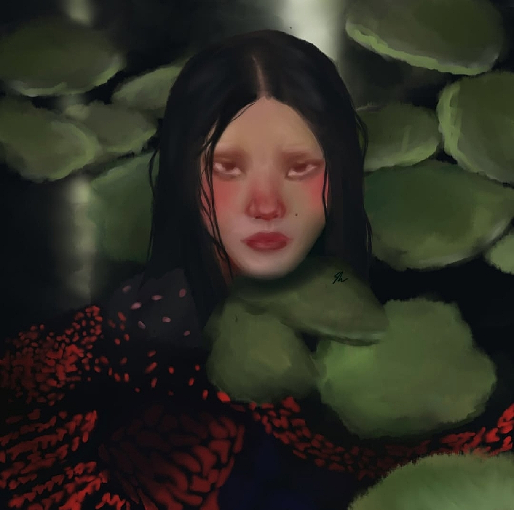
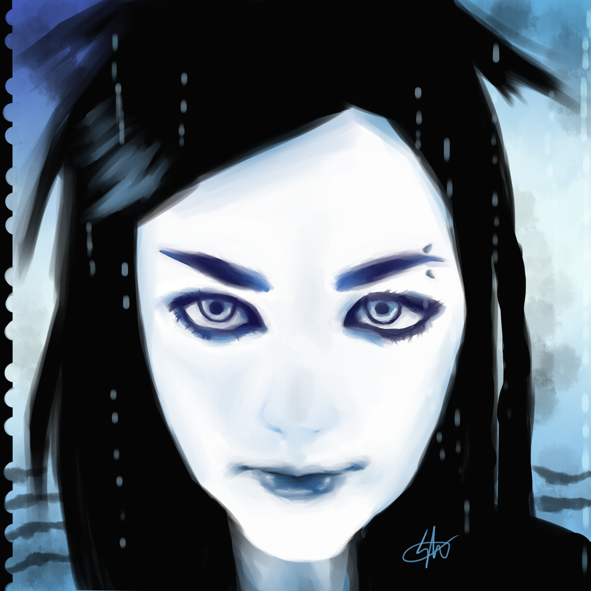
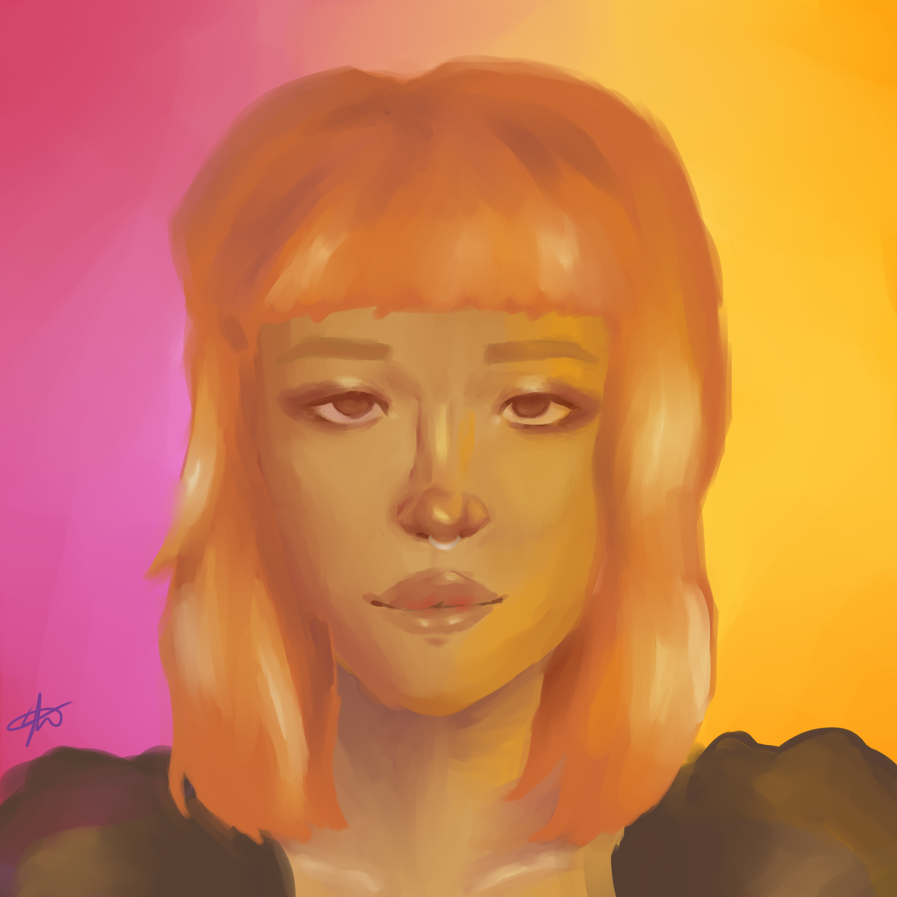
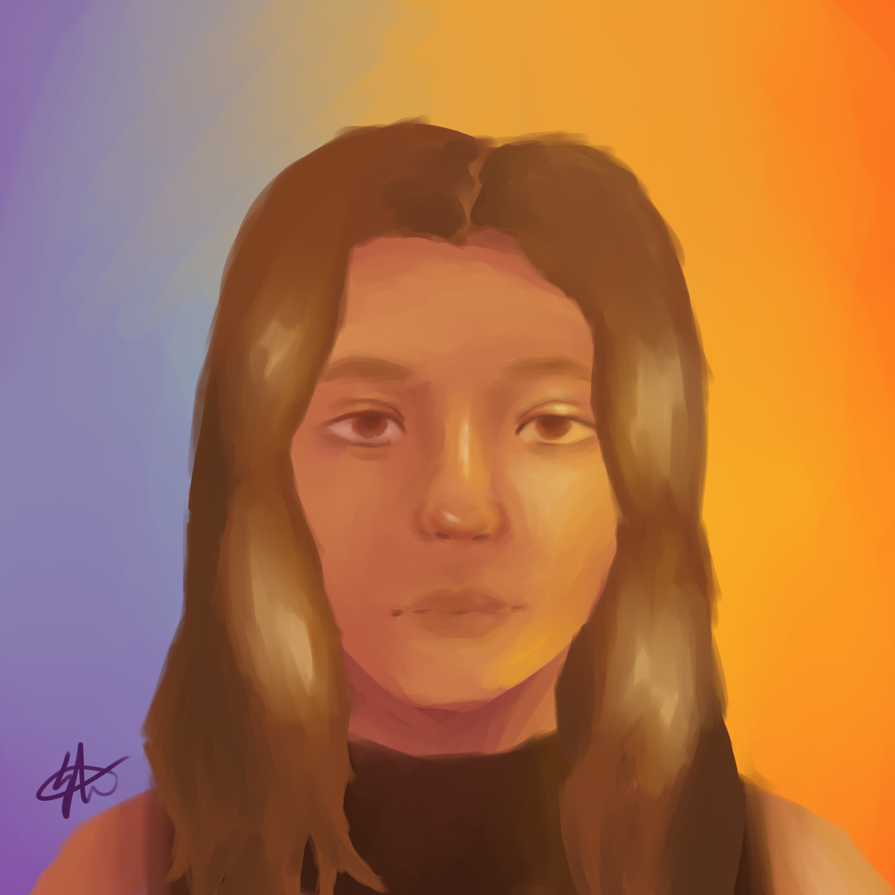
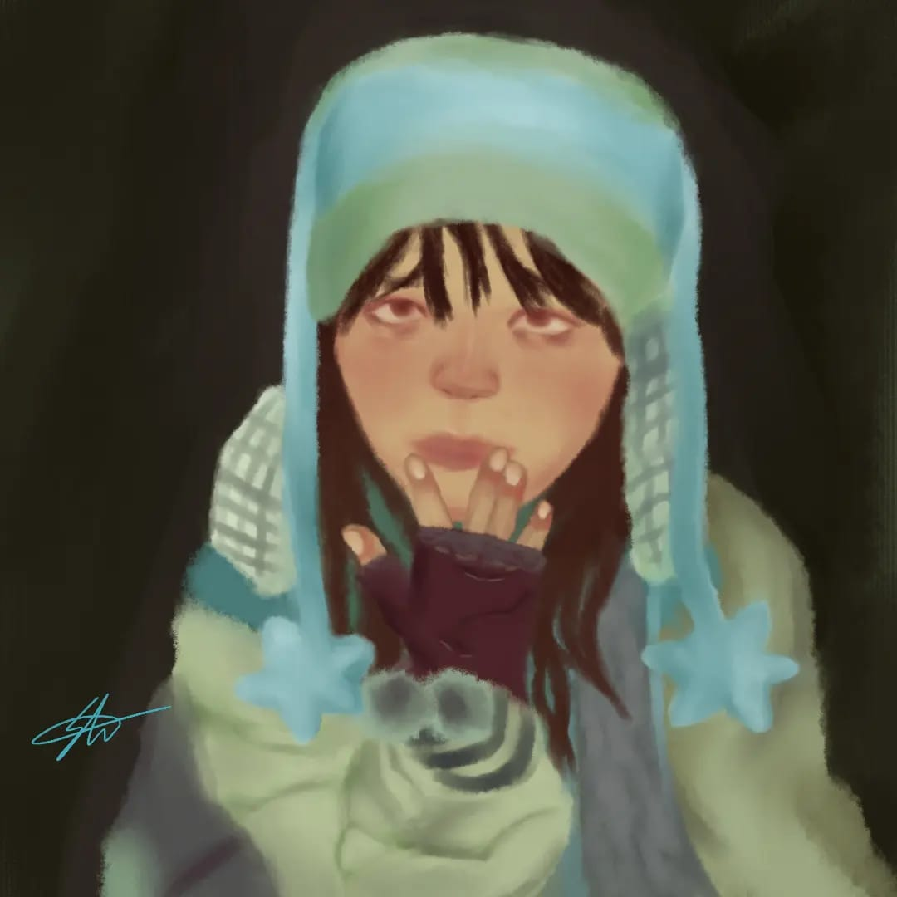
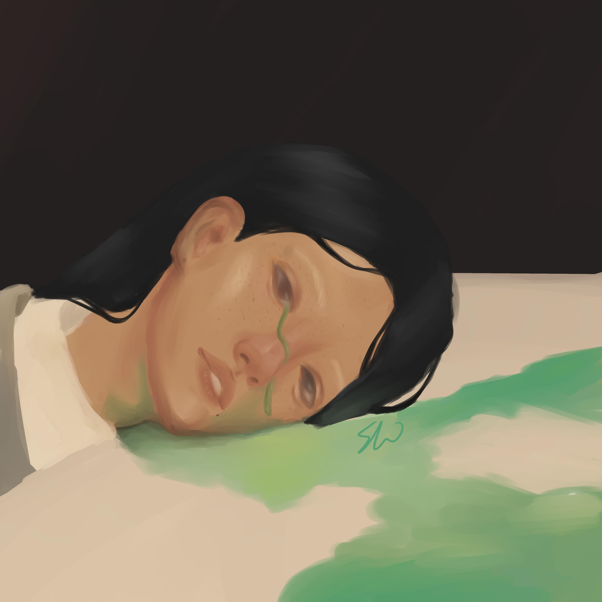
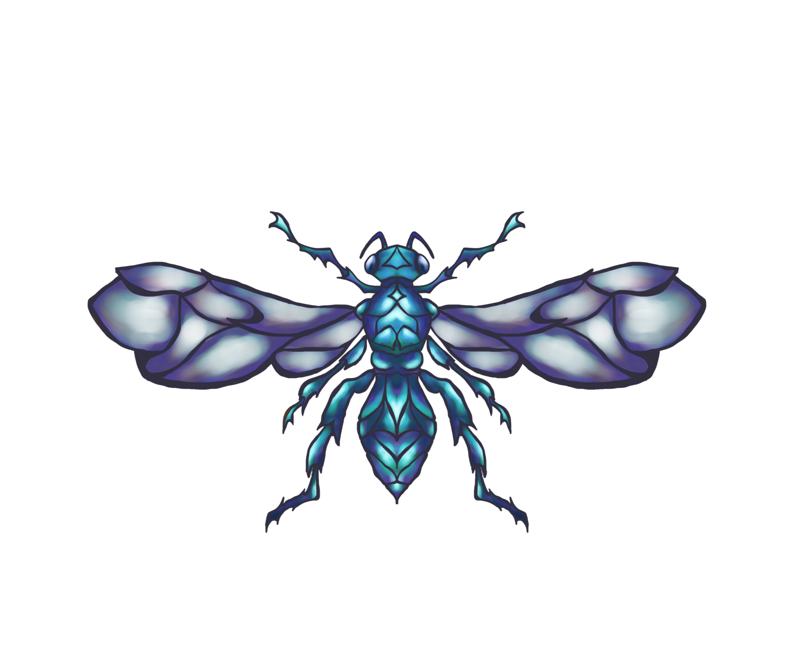
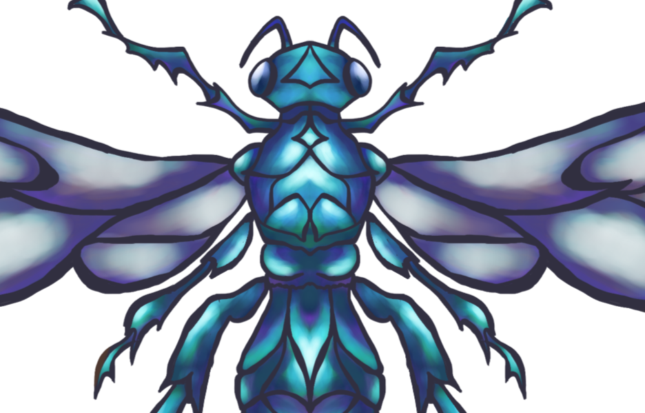
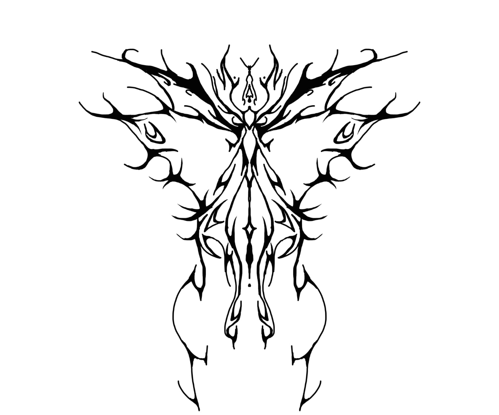

COLEÇÕES

IRREVERSÍVEL
.png)

As obras da coleção Irreversível foram feitas como um estudo de desenho semi-realista junto à adaptação ao meio digital. Por isso, algumas criações não apresentam a máxima qualidade de detalhamento e resolução, evidenciando o aparente processo de aprendizagem ao uso dessas ferramentas.
O estudo consiste na criação direta da obra, ou seja, sem rascunho ou line art, apenas observando as referências e colorindo o “papel” continuamente. Essa maneira de desenhar é imprevisível e não há certo ou errado, mas quando um traço é considerado “errado” quase não há uso de borracha, normalmente é adicionado mais cor ao desenho tentando reparar o “erro” e é isso que traz graça à ele. Sem esboço e traços auxiliares, a anatomia e expressões faciais podem não possuir um resultado natural, harmônico ou humanizado. Por isso, as mulheres desenhadas possuem um olhar etéreo, quase inexpressivo, incorporando o “erro” na construção da obra.

Digital, 2023, Paint Tool Sai 2


Digital, 2023, Paint Tool Sai 2


Digital, 2023, Paint Tool Sai 2


Digital, 2022, Paint Tool Sai 2
.jpeg)

Digital, 2021, Paint Tool Sai 2

Digital, 2021, Paint Tool Sai 2
.jpg)
As obras da coleção Arthropoda se iniciam como um estudo da estrutura corporal dos insetos, com enfoque em sua simetria bilateral. Assim, cada traço explora as variações da forma e como ela se configura idêntica em dois eixos, estabelecendo uma relação entre liberdade estética e equilíbrio na imagem.
Diferente da coleção Irreversível, esta coleção tem a line art como protagonista, sendo, até então, um método pouco recorrente em minha prática de desenho digital. Por isso, os insetos foram escolhidos para esse exercício, eles apresentam formas diversificadas e orgânicas, o que permite liberdade de experimentação gráfica e criativa. Além disso, as obras presentes nesta galeria atribuem a simetria como um guia para o desenvolvimento do traço, possibilitando a criação que varia entre as linhas mais leves e fluidas até às exageradas e grotescas, porém mantendo, ainda assim, a harmonia da imagem.
Inicialmente criadas para atender projetos específicos, essas obras, atualmente, são desenvolvidas a fim de ampliar minhas técnicas de desenho, para futuramente aplicá-las na ilustração de tatuagens

Digital, 2025, Krita
.png)

Digital, 2025, Krita


Digital, 2025, Krita